|
惡靈古堡GC復刻板-----敵人介紹
|
資料協助：網友 小齊
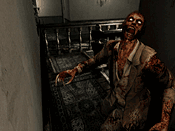 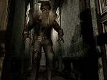 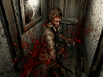 僵屍──惡靈系列中最常見的僵屍，這次添加了新的攻擊要素，除了咬食攻擊、吐腐蝕酸液之外， 還能使用利爪攻擊，難度大大的提昇了，在本作當中常常會遇到躺在路上的殭屍，如果放 著不管會再度復活，成為暴走的「深紅之首」，暴走殭屍攻擊力高速度快，被他追在後面 可不是鬧著玩的。防止僵屍抱走的方法是將牠們的頭打爆，使用本作的新道具閃光手榴彈 成功率滿點；另一項物品：燈油，需要配合打火機來使用，讓僵屍不會有復活的可能性。 唯一慶幸的是這些暴走僵屍被擊倒後並不會再度暴走。 |
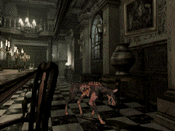 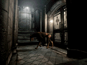 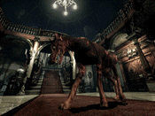 僵屍犬──全身被腐蝕到剩下幾坨爛肉，可能會從任何地方衝出來，行動靈敏，還擁有生物最基本 的生存意識，想打贏他們也不是件容易的事 |
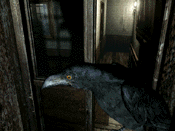 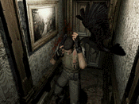 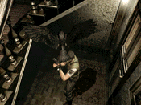 烏鴉──群體行動的烏鴉在幽暗處埋伏，發出淒慘的鳴叫，地上還散落著羽毛，如果玩家不幸被纏 上了，可能會動彈不得 |
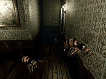 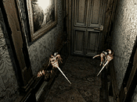 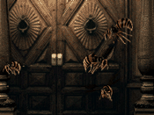 蜜蜂──使用帶著毒素的刺針，發出嗡嗡地聲音四處尋找敵人，一旦發現就絕不放過 |
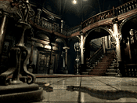 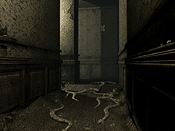 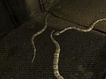 毒蛇──生命力弱、帶有毒性，會主動攻擊生命體 ，想要安然無恙從牠們身邊跑過，恐怕不容易 |
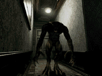 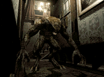 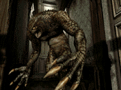 獵人──人為製造的生化武器，擁有一擊斃殺的巨大爪子，行動能力敏捷，殺傷力極大的跳躍攻擊 給玩家帶來莫大的驚恐 |
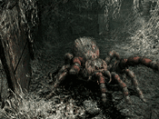 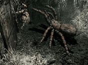 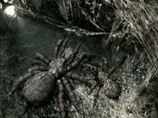 毒蜘蛛──八隻腳沒有地形限制地爬來爬去，從遠距離噴出毒液攻擊，成為阻擋玩家去路的難題 |
|
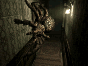 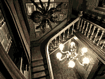 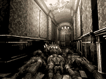 大蜘蛛──單純由一般蜘蛛受病毒侵蝕後巨大化而成，除了那毛茸茸的噁心感外，似乎沒有威脅 ？ |
|
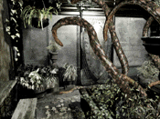 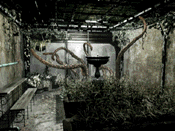 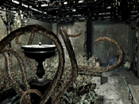 植物──受病毒感染而成，身體異常龐大，玩家根本無法用任何武器攻擊到他那扭動不停的身軀 |
|
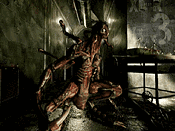 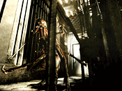 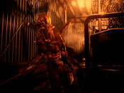 Cimera──由蒼蠅和人類的遺傳基因製造出來的生物， 擁有像鐮刀一般的勾爪，和獵人一樣有許多 其他生物沒有的要素 |
|
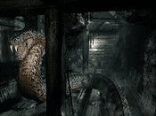 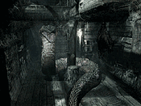 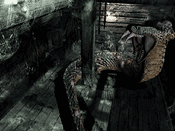 大蛇──Boss戰出現的棘手敵人，三角形頭部的毒蛇，用巨大的毒牙咬嚙獵物 ，劇烈的毒性是牠最 大的武器 |
|
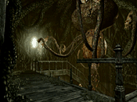 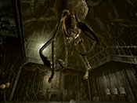 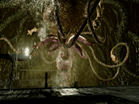 第42號植物──本作不同於以往的攻擊空間，兩個樓層的設置讓他對玩家的攻擊也有所不同 ，對牠 具體有效的攻擊，除了根部之外，中央開啟的囊苞也是弱點之一 |
|
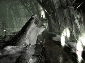 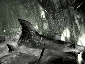 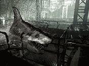 鯊魚──比前作更具有壓迫感的巨大鯊魚，配上緊張驚悚的背景音樂，要讓玩家嚇破膽 |
|
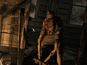 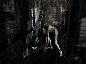 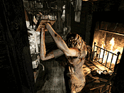 Lisa Trevor──拖著手銬、腳鐐，戴著人皮面具，發出悲鳴的叫聲出現在玩家面前，擁有極大的力 氣，在遊戲中取得的files中得知一家三口都成為Umbrella實驗品的可憐小女孩，無敵 又可怕的角色 |
|
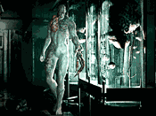 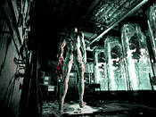 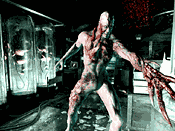 Tyrant──以人為基準的人造怪物，不像一般病毒生物以「吃」為目的攻擊玩家，高速的衝擊加上巨 大的利爪揮動，不愧為遊戲中的最終Boss |
惡靈深淵Biohazard Abyss http://98.to/coolbio